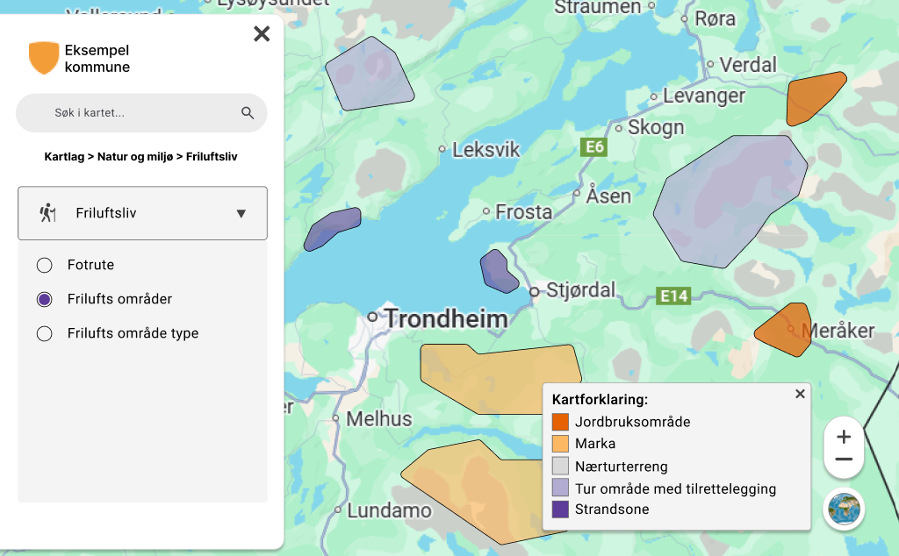
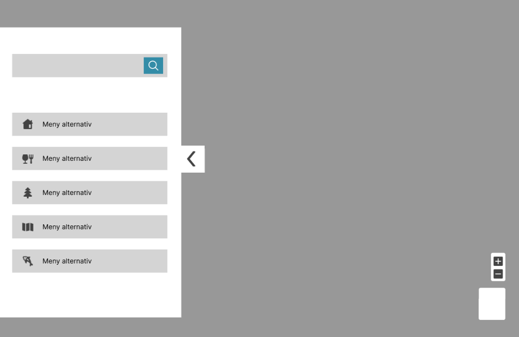

Som en del av bacheloroppgaven min på Anvendt datateknologi ved OsloMet utviklet gruppen min og jeg en moderne, webbasert kartapplikasjon i samarbeid med Norconsult Digital AS. Løsningen gjør det mulig å vise geografiske data i sanntid gjennom dynamisk håndtering av vektorfliser i kontrast til tradisjonelle norske kartløsninger som ofte baserer seg på forhåndsgenererte rasterkart. Applikasjonen er bygget med **React** og **OpenLayers** på frontend, kombinert med en **ASP.NET Core backend** koblet til en **PostGIS-database** via Martin Tile Server. Dette gir en fleksibel, skalerbar og høyytelsesløsning som støtter:
Prosjektet hadde stort fokus på brukervennlighet og universell utforming, med støtte for WCAG 2.2-standardene. Resultatet er en intuitiv og responsiv applikasjon som kombinerer høy ytelse, god skalerbarhet og inkluderende design, samtidig som den legger til rette for videreutvikling i en produksjonssetting.

